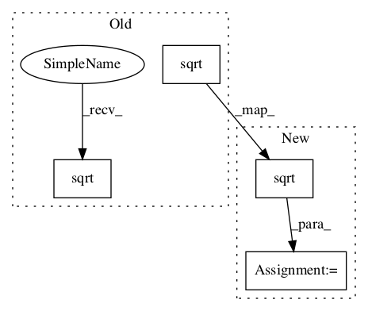

6b8a9a5f0e738d98904ff7c46c79a44bfdd56686,GPflow/sgpr.py,SGPR,build_predict,#SGPR#Any#Any#,76

Before Change
Kuu = self.kern.K(self.Z) + eye(num_inducing) * 1e-6
Kus = self.kern.K(self.Z, Xnew)
L = tf.cholesky(Kuu)
A = tf.matrix_triangular_solve(L, Kuf, lower=True)*tf.sqrt(1./self.likelihood.variance)
B = tf.matmul(A, tf.transpose(A)) + eye(num_inducing)
LB = tf.cholesky(B)
c = tf.matrix_triangular_solve(LB, tf.matmul(A, err), lower=True) * tf.sqrt(1./self.likelihood.variance)
tmp1 = tf.matrix_triangular_solve(L, Kus, lower=True)
tmp2 = tf.matrix_triangular_solve(LB, tmp1, lower=True)
mean = tf.matmul(tf.transpose(tmp2), c)
if full_cov:
After Change
Kuf = self.kern.K(self.Z, self.X)
Kuu = self.kern.K(self.Z) + eye(num_inducing) * 1e-6
Kus = self.kern.K(self.Z, Xnew)
sigma = tf.sqrt(self.likelihood.variance)
L = tf.cholesky(Kuu)
A = tf.matrix_triangular_solve(L, Kuf, lower=True) / sigma
B = tf.matmul(A, tf.transpose(A)) + eye(num_inducing)
LB = tf.cholesky(B)
Aerr = tf.matmul(A, err)
c = tf.matrix_triangular_solve(LB, Aerr, lower=True) / sigma
tmp1 = tf.matrix_triangular_solve(L, Kus, lower=True)
tmp2 = tf.matrix_triangular_solve(LB, tmp1, lower=True)
mean = tf.matmul(tf.transpose(tmp2), c)
if full_cov:
var = self.kern.K(Xnew) + tf.matmul(tf.transpose(tmp2), tmp2)\
- tf.matmul(tf.transpose(tmp1), tmp1)
shape = tf.pack([1, 1, tf.shape(self.Y)[1]])
var = tf.tile(tf.expand_dims(var, 2), shape)
else:
var = self.kern.Kdiag(Xnew) + tf.reduce_sum(tf.square(tmp2), 0)\
- tf.reduce_sum(tf.square(tmp1), 0)
shape = tf.pack([1, tf.shape(self.Y)[1]])
var = tf.tile(tf.expand_dims(var, 1), shape)
return mean + self.mean_function(Xnew), var
class GPRFITC(GPModel):
In pattern: SUPERPATTERN
Frequency: 3
Non-data size: 4
Instances
Project Name: GPflow/GPflow
Commit Name: 6b8a9a5f0e738d98904ff7c46c79a44bfdd56686
Time:
Author: null
File Name: GPflow/sgpr.py
Class Name: SGPR
Method Name: build_predict
Project Name: GPflow/GPflow
Commit Name: 6b8a9a5f0e738d98904ff7c46c79a44bfdd56686
Time:
Author: null
File Name: GPflow/sgpr.py
Class Name: SGPR
Method Name: build_likelihood
Project Name: NVIDIA/OpenSeq2Seq
Commit Name: ad12fba29f084189bdcb9ab5f23863d431f5bb02
Time:
Author: null
File Name: open_seq2seq/parts/convs2s/ffn_wn_layer.py
Class Name: FeedFowardNetworkNormalized
Method Name: __init__